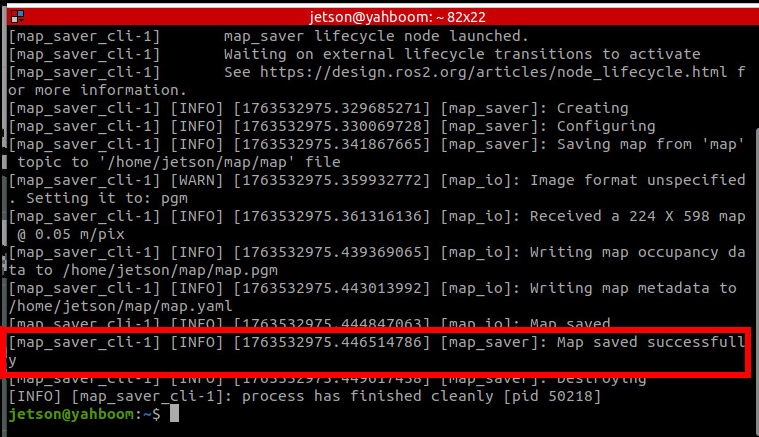
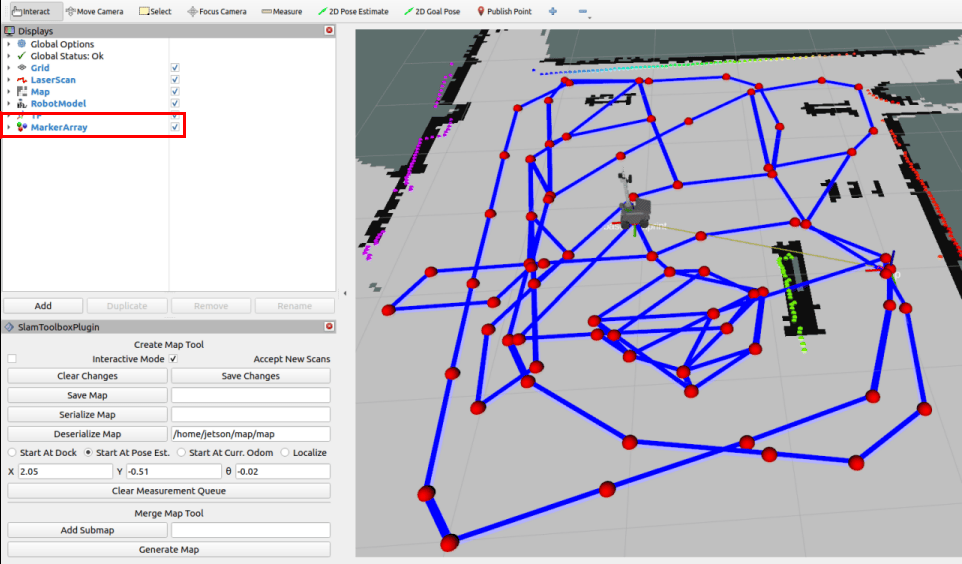

Быстрая повторная локализация и навигация
1. Содержание урока
- Изучение возможностей быстрой повторной локализации (relocalization) и навигации робота.
- Запустите программу. В RVIZ загрузятся карта в реальном времени и модель робота. Робот способен быстро определить своё положение на карте и выполнять SLAM-картографирование и навигацию в реальном времени.
2. Обзор принципа работы
2.1 Введение
- Navigation 2 (Nav2) — это фреймворк навигации, входящий в состав ROS 2. Его назначение — безопасно перемещать мобильного робота из точки A в точку B.
- Алгоритм локализации, используемый в Navigation 2 по умолчанию, — AMCL (Adaptive Monte Carlo Localization). При замене способа локализации AMCL по умолчанию на способ локализации Cartographer остальные функции навигации остаются неизменными.
2.2 Различия между двумя способами локализации
- AMCL: подходит для сценариев с известной картой. Например, в помещении с заранее построенной картой робот может использовать AMCL для определения своего положения при выполнении повторяющихся задач или навигации.
- Cartographer: больше подходит для сценариев, где роботу нужно одновременно строить карту и локализоваться в неизвестной среде. Например, когда робот впервые попадает в новую область и должен быстро построить карту и определить своё положение, Cartographer особенно эффективен.
3. Подготовка
3.1 Описание содержания
В этом уроке в качестве примера используется Jetson Orin NX. Для плат Raspberry Pi и Jetson Nano необходимо открыть терминал и ввести команду для входа в Docker-контейнер. После входа в контейнер вводите команды этого урока уже внутри него. Инструкции по входу в Docker-контейнер см. в руководстве к изделию [Configuration and Operation Guide] — [Entering the Docker] (для пользователей Jetson Nano и Raspberry Pi 5, см. соответствующий раздел). Для плат Orin и NX достаточно просто открыть терминал и ввести команды этого урока.
3.2 Подготовка карты
Для быстрой повторной локализации и навигации в этом уроке необходимо сначала сохранить карту в формате pbstream, следуя инструкциям урока [6. LiDAR — 7. Cartographer Mapping]. Файл pbstream автоматически сохранится в домашней директории (для Raspberry Pi и Jetson Nano — в директории /root внутри Docker).

4. Запуск примера
4.1 Функция одноточечной навигации
Обратите внимание:
- Для контроллеров серии Jetson Nano и Raspberry Pi необходимо сначала войти в Docker-контейнер (порядок действий см. в разделе [Docker Course Chapter — Entering the Robot's Docker Container]).
В терминале робота запустите команду нижнеуровневых датчиков:
ros2 launch M3Pro_navigation base_bringup.launch.py
Затем запустите узел Cartographer для локализации:
ros2 launch M3Pro_navigation cartographer_localization.launch.py
Наконец, запустите Navigation 2:
ros2 launch M3Pro_navigation navigation_launch.py
Функцию визуализации rviz можно запустить как в терминале робота, так и на виртуальной машине. Выберите один из способов. Не запускайте её одновременно на виртуальной машине и на роботе:
Команда запуска интерфейса визуализации rviz на виртуальной машине:
ros2 launch slam_view nav_rviz.launch.py
Команда запуска интерфейса визуализации rviz на роботе:
ros2 launch M3Pro_navigation nav_rviz.launch.py


- В rviz видно, что робот автоматически оценивает своё начальное положение — ручная инициализация не требуется.
- Если начальное положение робота значительно отклоняется от реального, используйте инструмент [2D Pose Estimate] на панели инструментов rviz, чтобы задать приблизительное положение для быстрой локализации.
4.3 Просмотр графа взаимодействия узлов
Введите в терминале виртуальной машины:
ros2 run rqt_graph rqt_graph
Если граф не отображается сразу, выберите [Nodes/Topics (all)] и нажмите кнопку обновления в левом верхнем углу. Оригинальное изображение слишком велико; его можно посмотреть в папке этого урока.
4.4 Просмотр дерева TF
Введите в терминале виртуальной машины:
ros2 run rqt_tf_tree rqt_tf_tree
Если страница не отображается сразу, нажмите значок обновления в левом верхнем углу, чтобы обновить её. Оригинальное изображение слишком велико; его можно посмотреть в папке этого урока.


5. Разбор принципа работы
Ключевой момент быстрой повторной локализации и навигации — замена способа локализации AMCL по умолчанию в navigation2 на способ локализации Cartographer. Все остальные настройки остаются неизменными. Ниже объясняется, как заменить способ локализации.
Расположение исходного кода:
Jetson Orin Nano, Jetson Orin NX:
/home/jetson/M3Pro_ws/M3Pro_navigation/launch
Jetson Nano, Raspberry Pi:
Сначала необходимо войти в Docker.
/root/M3Pro_ws/M3Pro_navigation/launch
Найдите файл navigation_launch.py в директории launch. Его содержимое приведено ниже:
Этот файл изменяет стандартный launch-файл navigation2, удаляя узел, который изначально включал способ локализации AMCL. Остальная часть стека навигации остаётся неизменной.
import os
from ament_index_python.packages import get_package_share_directory
from launch import LaunchDescription
from launch.actions import DeclareLaunchArgument, GroupAction, SetEnvironmentVariable
from launch.conditions import IfCondition
from launch.substitutions import LaunchConfiguration, PythonExpression
from launch_ros.actions import LoadComposableNodes
from launch_ros.actions import Node
from launch_ros.descriptions import ComposableNode, ParameterFile
from nav2_common.launch import RewrittenYaml
def generate_launch_description():
# Получаем директорию launch
bringup_dir = get_package_share_directory('nav2_bringup')
namespace = LaunchConfiguration('namespace')
use_sim_time = LaunchConfiguration('use_sim_time')
autostart = LaunchConfiguration('autostart')
params_file = LaunchConfiguration('params_file')
use_composition = LaunchConfiguration('use_composition')
container_name = LaunchConfiguration('container_name')
container_name_full = (namespace, '/', container_name)
use_respawn = LaunchConfiguration('use_respawn')
log_level = LaunchConfiguration('log_level')
param_file_name = "yahboom_M3Pro_carto.yaml"
lifecycle_nodes = ['controller_server',
'smoother_server',
'planner_server',
'behavior_server',
'bt_navigator',
'waypoint_follower',
'velocity_smoother']
# Map fully qualified names to relative ones so the node's namespace can be prepended.
# In case of the transforms (tf), currently, there doesn't seem to be a better alternative
# https://github.com/ros/geometry2/issues/32
# https://github.com/ros/robot_state_publisher/pull/30
# TODO(orduno) Substitute with `PushNodeRemapping`
# https://github.com/ros2/launch_ros/issues/56
remappings = [('/tf', '/tf'),
('/tf_static', '/tf_static')]
# Create our own temporary YAML files that include substitutions
param_substitutions = {
'use_sim_time': use_sim_time,
'autostart': autostart}
configured_params = ParameterFile(
RewrittenYaml(
source_file=params_file,
root_key=namespace,
param_rewrites=param_substitutions,
convert_types=True),
allow_substs=True)
stdout_linebuf_envvar = SetEnvironmentVariable(
'RCUTILS_LOGGING_BUFFERED_STREAM', '1')
declare_namespace_cmd = DeclareLaunchArgument(
'namespace',
default_value='',
description='Top-level namespace')
declare_use_sim_time_cmd = DeclareLaunchArgument(
'use_sim_time',
default_value='false',
description='Use simulation (Gazebo) clock if true')
declare_params_file_cmd = DeclareLaunchArgument(
'params_file',
# default_value=os.path.join(bringup_dir, 'params', 'nav2_params.yaml'),
default_value=os.path.join(get_package_share_directory("M3Pro_navigation"),
"param", param_file_name ),
description='Full path to the ROS2 parameters file to use for all launched nodes')
declare_autostart_cmd = DeclareLaunchArgument(
'autostart', default_value='true',
description='Automatically startup the nav2 stack')
declare_use_composition_cmd = DeclareLaunchArgument(
'use_composition', default_value='False',
description='Use composed bringup if True')
declare_container_name_cmd = DeclareLaunchArgument(
'container_name', default_value='nav2_container',
description='the name of conatiner that nodes will load in if use composition')
declare_use_respawn_cmd = DeclareLaunchArgument(
'use_respawn', default_value='False',
description='Whether to respawn if a node crashes. Applied when composition is disabled.')
declare_log_level_cmd = DeclareLaunchArgument(
'log_level', default_value='info',
description='log level')
load_nodes = GroupAction(
condition=IfCondition(PythonExpression(['not ', use_composition])),
actions=[
Node(
package='nav2_controller',
executable='controller_server',
output='screen',
respawn=use_respawn,
respawn_delay=2.0,
parameters=[configured_params],
arguments=['--ros-args', '--log-level', log_level],
remappings=remappings + [('cmd_vel', 'cmd_vel_nav')]),
Node(
package='nav2_smoother',
executable='smoother_server',
name='smoother_server',
output='screen',
respawn=use_respawn,
respawn_delay=2.0,
parameters=[configured_params],
arguments=['--ros-args', '--log-level', log_level],
remappings=remappings),
Node(
package='nav2_planner',
executable='planner_server',
name='planner_server',
output='screen',
respawn=use_respawn,
respawn_delay=2.0,
parameters=[configured_params],
arguments=['--ros-args', '--log-level', log_level],
remappings=remappings),
Node(
package='nav2_behaviors',
executable='behavior_server',
name='behavior_server',
output='screen',
respawn=use_respawn,
respawn_delay=2.0,
parameters=[configured_params],
arguments=['--ros-args', '--log-level', log_level],
remappings=remappings),
Node(
package='nav2_bt_navigator',
executable='bt_navigator',
name='bt_navigator',
output='screen',
respawn=use_respawn,
respawn_delay=2.0,
parameters=[configured_params],
arguments=['--ros-args', '--log-level', log_level],
remappings=remappings),
Node(
package='nav2_waypoint_follower',
executable='waypoint_follower',
name='waypoint_follower',
output='screen',
respawn=use_respawn,
respawn_delay=2.0,
parameters=[configured_params],
arguments=['--ros-args', '--log-level', log_level],
remappings=remappings),
Node(
package='nav2_velocity_smoother',
executable='velocity_smoother',
name='velocity_smoother',
output='screen',
respawn=use_respawn,
respawn_delay=2.0,
parameters=[configured_params],
arguments=['--ros-args', '--log-level', log_level],
remappings=remappings +
[('cmd_vel', 'cmd_vel_nav'), ('cmd_vel_smoothed', 'cmd_vel')]),
Node(
package='nav2_lifecycle_manager',
executable='lifecycle_manager',
name='lifecycle_manager_navigation',
output='screen',
arguments=['--ros-args', '--log-level', log_level],
parameters=[{'use_sim_time': use_sim_time},
{'autostart': autostart},
{'node_names': lifecycle_nodes}]),
]
)
load_composable_nodes = LoadComposableNodes(
condition=IfCondition(use_composition),
target_container=container_name_full,
composable_node_descriptions=[
ComposableNode(
package='nav2_controller',
plugin='nav2_controller::ControllerServer',
name='controller_server',
parameters=[configured_params],
remappings=remappings + [('cmd_vel', 'cmd_vel_nav')]),
ComposableNode(
package='nav2_smoother',
plugin='nav2_smoother::SmootherServer',
name='smoother_server',
parameters=[configured_params],
remappings=remappings),
ComposableNode(
package='nav2_planner',
plugin='nav2_planner::PlannerServer',
name='planner_server',
parameters=[configured_params],
remappings=remappings),
ComposableNode(
package='nav2_behaviors',
plugin='behavior_server::BehaviorServer',
name='behavior_server',
parameters=[configured_params],
remappings=remappings),
ComposableNode(
package='nav2_bt_navigator',
plugin='nav2_bt_navigator::BtNavigator',
name='bt_navigator',
parameters=[configured_params],
remappings=remappings),
ComposableNode(
package='nav2_waypoint_follower',
plugin='nav2_waypoint_follower::WaypointFollower',
name='waypoint_follower',
parameters=[configured_params],
remappings=remappings),
ComposableNode(
package='nav2_velocity_smoother',
plugin='nav2_velocity_smoother::VelocitySmoother',
name='velocity_smoother',
parameters=[configured_params],
remappings=remappings +
[('cmd_vel', 'cmd_vel_nav'), ('cmd_vel_smoothed', 'cmd_vel')]),
ComposableNode(
package='nav2_lifecycle_manager',
plugin='nav2_lifecycle_manager::LifecycleManager',
name='lifecycle_manager_navigation',
parameters=[{'use_sim_time': use_sim_time,
'autostart': autostart,
'node_names': lifecycle_nodes}]),
],
)
# Create the launch description and populate
ld = LaunchDescription()
# Set environment variables
ld.add_action(stdout_linebuf_envvar)
# Declare the launch options
ld.add_action(declare_namespace_cmd)
ld.add_action(declare_use_sim_time_cmd)
ld.add_action(declare_params_file_cmd)
ld.add_action(declare_autostart_cmd)
ld.add_action(declare_use_composition_cmd)
ld.add_action(declare_container_name_cmd)
ld.add_action(declare_use_respawn_cmd)
ld.add_action(declare_log_level_cmd)
# Add the actions to launch all of the navigation nodes
ld.add_action(load_nodes)
ld.add_action(load_composable_nodes)
return ld
В директории launch найдите файл cartographer_localization.launch.py. Его содержимое приведено ниже:
Этот файл запускает узел cartographer, который заменяет способ локализации по умолчанию в navigation2.
from launch import LaunchDescription
from launch.actions import DeclareLaunchArgument
from launch.conditions import IfCondition
from launch.substitutions import LaunchConfiguration
from launch_ros.actions import Node
from launch_ros.substitutions import FindPackageShare
from launch.actions import Shutdown
def generate_launch_description():
load_state_filename_arg = DeclareLaunchArgument(
'load_state_filename',
default_value='/home/jetson/yahboom_map.pbstream'
)
use_rviz_arg = DeclareLaunchArgument(
'use_rviz',
default_value='true',
)
cartographer_node = Node(
package = 'cartographer_ros',
executable = 'cartographer_node',
parameters = [{'use_sim_time': False}],
arguments = [
'-configuration_directory',
FindPackageShare('M3Pro_navigation').find('M3Pro_navigation') + '/param',
'-configuration_basename', 'yahboom_M3Pro.lua',
'-load_state_filename', LaunchConfiguration('load_state_filename')],
remappings = [
('imu', '/imu/data')],
output = 'screen'
)
cartographer_occupancy_grid_node = Node(
package = 'cartographer_ros',
executable = 'cartographer_occupancy_grid_node',
parameters = [
{'use_sim_time': False},
{'resolution': 0.05}],
)
rviz_node = Node(
package = 'rviz2',
executable = 'rviz2',
on_exit = Shutdown(),
arguments = ['-d',
FindPackageShare('cartographer_ros').find('cartographer_ros') +
'/configuration_files/demo_2d.rviz'],
parameters = [{'use_sim_time': False}],
condition=IfCondition(LaunchConfiguration('use_rviz'))
)
return LaunchDescription([
# Launch arguments
load_state_filename_arg,
use_rviz_arg,
# Nodes
cartographer_node,
cartographer_occupancy_grid_node,
#rviz_node,
])